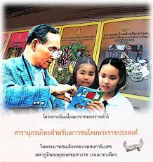

โครงการสารานุกรมไทยสำหรับเยาวชน
พระบาทสมเด็จพระเจ้าอยู่หัวได้มีพระราชดำริว่า การเรียนรู้เรื่องราวและวิชาการสาขาต่าง ๆ อย่างกว้างขวาง เป็นเหตุให้เกิด ความรู้ความคิดและความฉลาด ซึ่งเป็นปัจจัยสำคัญที่สุดสำหรับชีวิต ช่วยให้บุคคลสามารถสร้างประโยชน์สุขสร้างความเจริญมั่นคง ให้แก่ตนเอง รวมทั้งแก่สังคมและบ้านเมืองอันเป็นที่พึ่งอาศัยได้ ทุกคนจึงควรมีโอกาสที่จะศึกษาหาความรู้ได้ตามความประสงค์ และกำลังความสามารถโดยทั่วกัน โครงการสารานุกรมไทยสำหรับเยาวชนเป็นพระราชดำริริเริ่มของพระบาทสมเด็จพระเจ้าอยู่หัว โดยมีพระราชประสงค์จะให้ มีการจัดทำหนังสือประเภทสารานุกรม ซึ่งประกอบด้วยลักษณะและรูปแบบพิเศษผิดแผกจากสารานุกรมชุดต่าง ๆ ที่เคยมีผู้ผลิต มาแล้วทั้งในประเทศและที่ต่างประเทศ กล่าวคือ เป็นสารานุกรมอเนกประสงค์ บรรจุสรรพวิชาการอันเป็นสาระไว้ครบทุกแขนง โดยมีเรื่องต่าง ๆ ซึ่งแต่ละเรื่องมีวิทยากรเขียน โดยแบ่งเนื้อหาของเรื่องเดียวกันนั้นเป็น ๓ ตอน หรือ ๓ ระดับคือ สำหรับให้เด็ก รุ่นเล็กอ่านเข้าใจตอนหนึ่ง สำหรับเด็กรุ่นใหญ่ตอนหนึ่ง รวมทั้งผู้ใหญ่ผู้ที่สนใจอ่านเข้าใจได้อีกตอนหนึ่ง รวมเป็น ๓ ตอนเรียงต่อ กัน ผู้ใดมีความต้องการหรือพอใจจะเรียนรู้เรื่องใดตอนใด ก็สามารถค้นหาอ่านทราบได้โดยสะดวก นับว่าเป็นหนังสือที่มีประโยชน์ เกื้อกูลการศึกษาเพิ่มพูนปัญญาด้วยตนเองของประชาชนทุกรุ่นทุกวัยอย่างสำคัญ